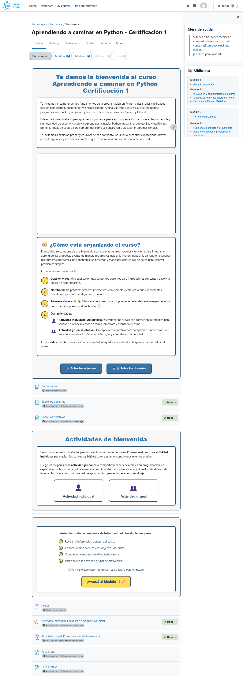
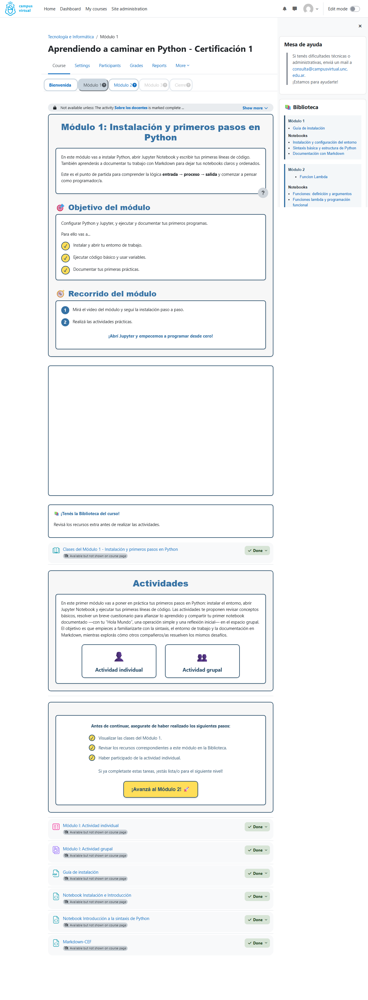
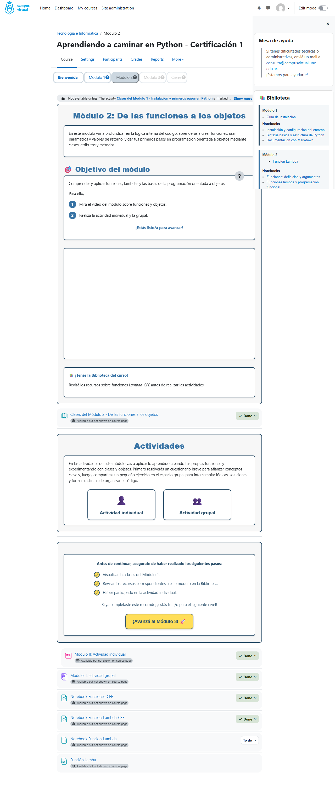
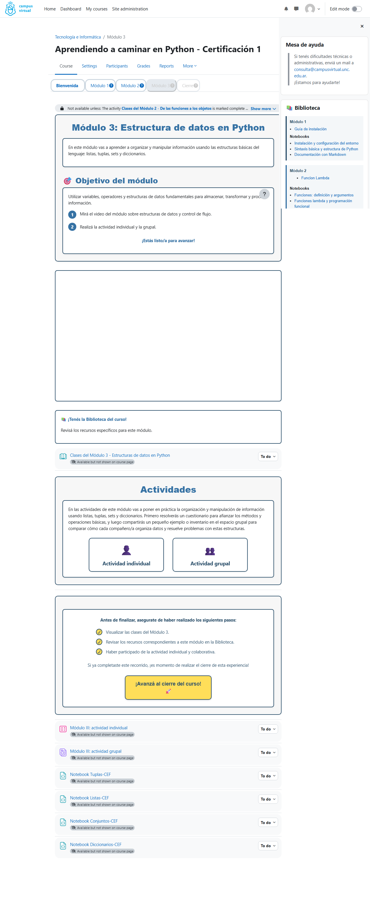
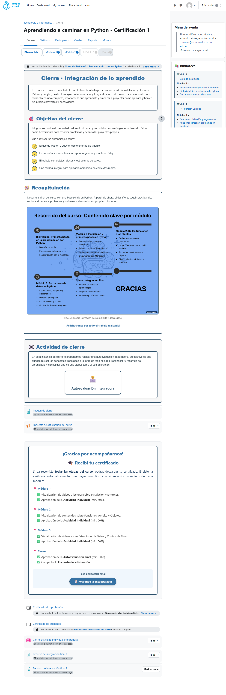

Curso ID: 269
URL: https://campus.aulavirtual.unc.edu.ar/course/view.php?id=269
Fecha del análisis: 17/7/2026, 05:02:17
Rol usado: Estudiante (admin no disponible)
| Vis | Actividad | Tipo | Completado |
|---|---|---|---|
| 👁️ | Botón volver | page | — |
| 👁️ | Sobre los docentes | page | — |
| 👁️ | Sobre los objetivos | page | — |
| 👁️ | ✨ Actividad de bienvenida: | label | — |
| 👁️ | Botón al modulo 1 | label | — |
| 👁️ | Avisos | forum | — |
| 👁️ | Actividad individual: Encuesta de diagnóstico inicial | feedback | — |
| 👁️ | Actividad grupal: Presentaciones de bienvenida | data | — |
| 👁️ | Foto profe 1 | resource | — |
| 👁️ | Foto profe 2 | resource | — |

| Vis | Actividad | Tipo | Completado |
|---|---|---|---|
| 👁️ | Clases del Módulo 1 - Instalación y primeros pasos en Python | book | — |
| 👁️ | Actividades | label | — |
| 👁️ | Botón al módulo 2 | label | — |
| 👁️ | Módulo I: Actividad individual | quiz | — |
| 👁️ | Módulo I: Actividad grupal | data | — |
| 👁️ | Guía de instalación | resource | — |
| 👁️ | Notebook Instalación e Introducción | resource | — |
| 👁️ | Notebook Introducción a la sintaxis de Python | resource | — |
| 👁️ | Markdown-CEF | resource | — |

| Vis | Actividad | Tipo | Completado |
|---|---|---|---|
| 👁️ | Clases del Módulo 2 - De las funciones a los objetos | book | — |
| 👁️ | Actividades | label | — |
| 👁️ | Botón al módulo 2 | label | — |
| 👁️ | Módulo II: Actividad individual | quiz | — |
| 👁️ | Módulo II: actividad grupal | data | — |
| 👁️ | Notebook Funciones-CEF | resource | — |
| 👁️ | Notebook Funcion-Lambda-CEF | resource | — |
| 👁️ | Notebook Funcion-Lambda | resource | — |
| 👁️ | Función Lamba | resource | — |

| Vis | Actividad | Tipo | Completado |
|---|---|---|---|
| 👁️ | Clases del Módulo 3 - Estructuras de datos en Python | book | — |
| 👁️ | Actividades | label | — |
| 👁️ | Botón al módulo 3 | label | — |
| 👁️ | Módulo III: actividad individual | quiz | — |
| 👁️ | Módulo III: actividad grupal | data | — |
| 👁️ | Notebook Tuplas-CEF | resource | — |
| 👁️ | Notebook Listas-CEF | resource | — |
| 👁️ | Notebook Conjuntos-CEF | resource | — |
| 👁️ | Notebook Diccionarios-CEF | resource | — |

| Vis | Actividad | Tipo | Completado |
|---|---|---|---|
| 👁️ | Actividades | label | — |
| 👁️ | Imagen de cierre | resource | — |
| 👁️ | Encuesta de satisfacción del curso | feedback | — |
| 👁️ | Agradecimiento | label | — |
| 👁️ | Certificado de aprobación | customcert | — |
| 👁️ | Certificado de asistencia | customcert | — |
| 👁️ | Cierre: actividad individual integradora | quiz | — |
| 👁️ | Recurso de integración final 1 | page | — |
| 👁️ | Recurso de integración final 2 | page | — |
